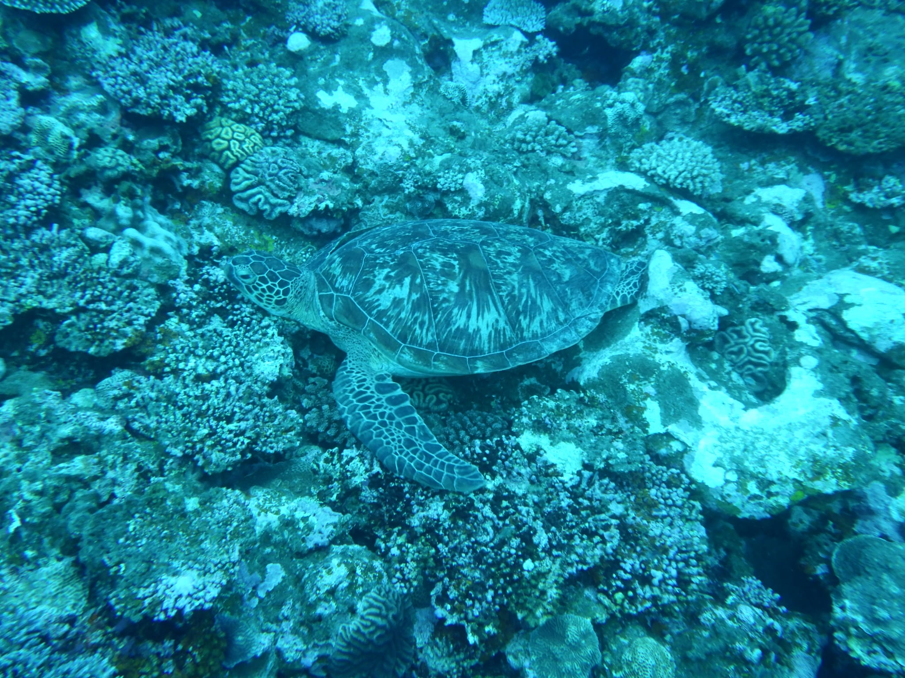
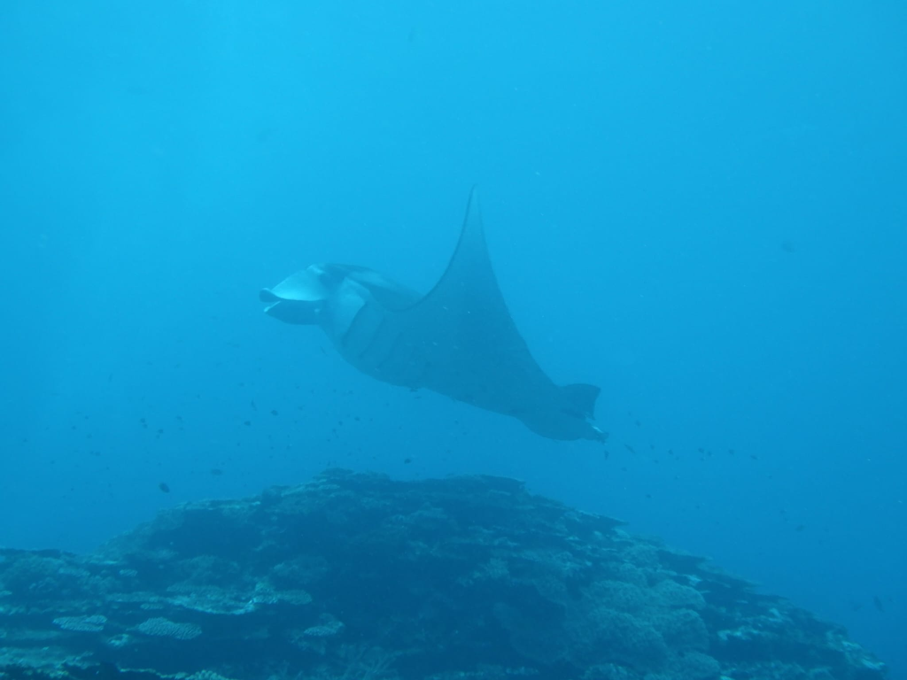
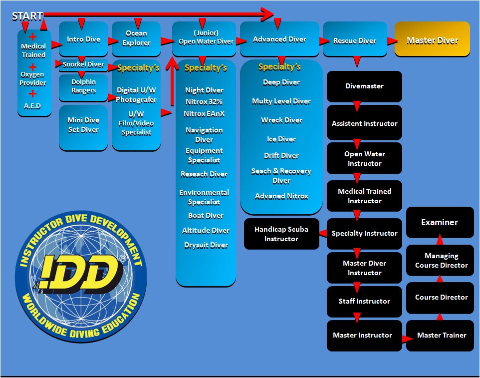

Mijn duiken
Ik heb al best wat geduikt sinds ik vier jaar geleden mijn duikbrevet haalde. Ik heb zo'n 30 duiken gemaakt, waarvan de meeste in het buitenland zijn. Ik heb alleen in Nederland geduikt voor het halen van mijn brevetten. De meest recente duik die ik gedaan heb was in Japan, waar ik een mantarog, en een schildpad zag (zie hieronder). Schildpadden zie je heel vaak in het buitenland, maar de mantarog zie je niet vaak, dus daar had ik best veel geluk.


Deze foto's heb ik zelf gemaakt, vandaar de wat minder goede kwaliteit.
Mijn brevetten
Ik heb 2 brevetten gehaald. Open water toen ik 11 was, en advanced open water toen ik 13 was. Met open water mag je 18 meter diep duiken, en met advanced open water 30 meter. Open water is de basics met vier duiken in nederlands water, en met advanced open water ga je je voorbereiden voor speciale situaties. Dat betekent dat je vijf verschillende duiken gaat doen, waarbij je iedere keer iets anders doet (zoals nachtduiken, diepduiken, werken met een kompas, etc.). Ik ben van plan om in de toekomst nog een rescue diver-brevet te halen, zodat ik anderen kan helpen en nog dieper kan duiken.
alle brevetten
Er bestaan verschillende duikbrevetten die aangeven wat je onder water kan doen. je begint met Open Water. hiermee mag je zelfstandig duiken tot ongeveer 18 meter. Je leert de belangrijkste theorie, vaardigheden en veiligheidsregels. Na dit brevet kun je het Advanced Open Water brevet halen. Hiermee mag je dieper duiken, vaak tot 30 meter, en leer je verschillende soorten duiken kennen, zoals navigatie- en nachtduiken. Daarna volgt het Rescue Diver-brevet, waarbij je leert omgaan met noodsituaties en andere duikers helpt. Wie professioneel wil duiken, kan het Divemaster-brevet halen. Hiermee mag je duikers begeleiden. Daarna kun je Instructor worden en zelf duiklessen geven.
